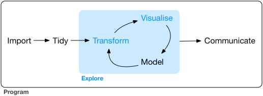
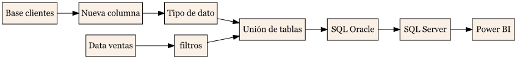

knitr::include_graphics("trabajo/data-science-explore.png")
Finanzas en R
Proyecto del curso - Desarrollo asistido por IA
Sebastián Egaña Santibáñez (segana@fen.uchile.cl)
Nicolás Leiva Díaz (nleivad@fen.uchile.cl)
9 de septiembre de 2026
🐙 https://github.com/sebaegana
💼 https://www.linkedin.com/in/sebastian-egana-santibanez/
Debe desarrollar un proyecto que solucione un problema de negocio financiero en base a código y herramientas en R, ya sea real o hipotético. En cualquiera de las dos situaciones debe realizar una descripción detallada del problema.
Como analista, se generan soluciones a problemas de negocios, y no “el cálculo de” o “el dato de”. En este sentido, en el contexto de las organizaciones el trabajo debe estar orientado a proveer soluciones de negocio de largo plazo.
En donde la comunicación corresponde a la solución al problema de negocios.
Más en el detalle, debemos tener la siguiente visión dentro de nuestros desarrollos:
Considere las siguientes explicaciones para el desarrollo de su modelo:
PD: ambos procesos anteriores pueden considerar la unión de tablas.
Train and evaluate model: proceso relacionado con el entrenamiento del modelo y evaluación de métricas relevantes para el modelo.
Version model: en caso de existir versiones del modelo
Deploy model: despliegue y entrega del modelo
Monitor model: revisión constante de métricas del modelo, como también de la operatividad del mismo
Veamos el siguiente ejemplo para el punto 1 y 2, para un modelo que no considera modelamiento avanzado:

Dentro de su trabajo, debe considerar los siguientes entregables:
Se generará un repositorio en Github por parte de cada alumno, en donde deben compartir sus entregas diferenciadas de la siguiente manera:
Cada carpeta debe contener los archivos utilizados para cada entrega que permitan la correcta generación y aplicación del proyecto.
⚠️ Se debe enviar un correo confirmando la subida de los archivos.
⚠️ Es importante tener la consideración sobre la configuración privada del repositorio en caso de ser necesario. En base a la documentación de Github:
⚠️ El repositorio deberá cumplir con la utilización correcta de la librería renv
Considera los puntos 1 y 2 Fecha: 18 de enero
Considera el punto 3 Fecha: 25 de enero
Considera todos los puntos anteriores Fecha: 2 de febrero
⚠️ Para todas las fechas, se considera como horario límite las 23:59 de cada día.